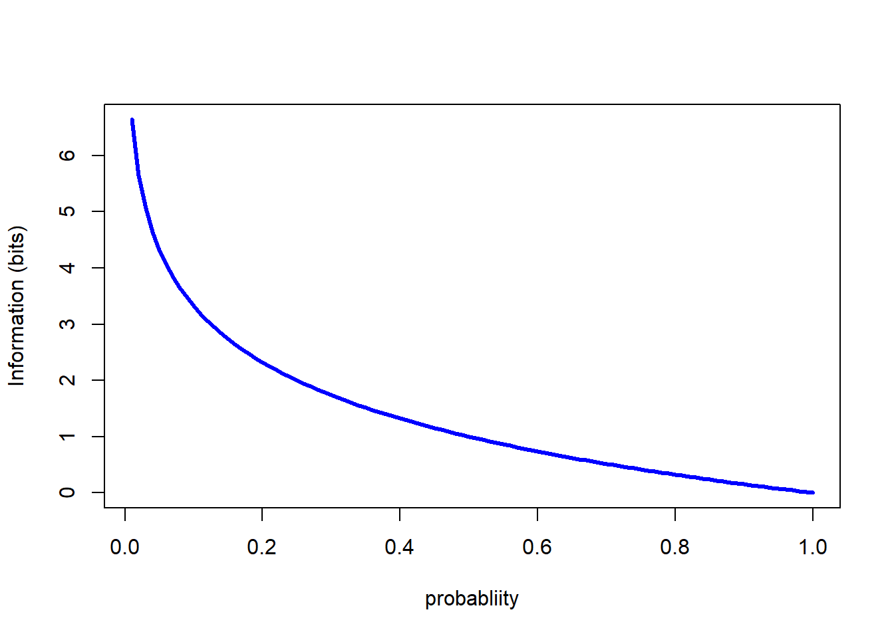
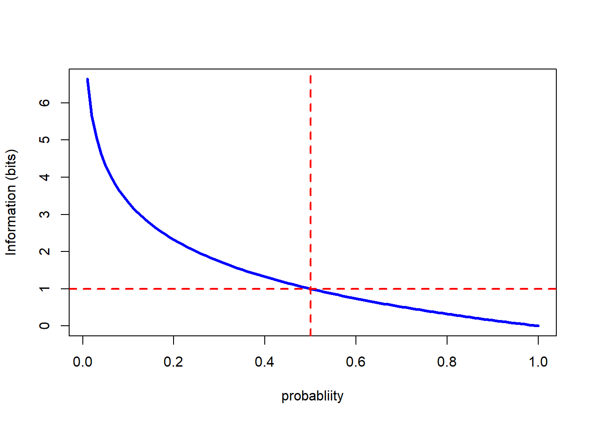
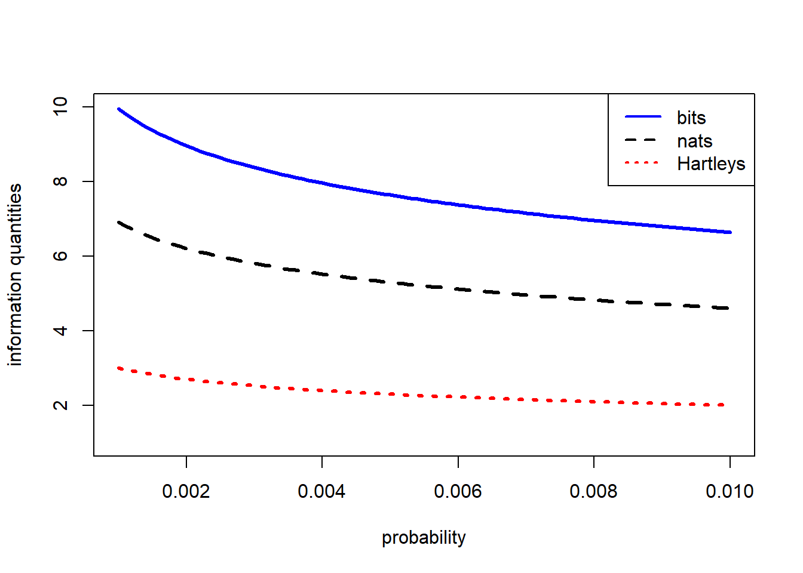
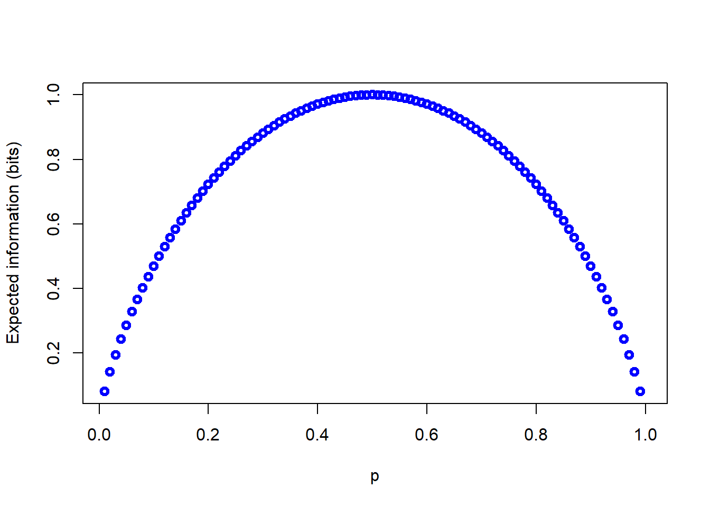

This short workshop is focused on some introductory concepts from the field of Information Theory that can be used in epidemiology, particularly in the analysis of disease forecasters and risk prediction systems. The use of information theory in plant pathology has a relatively short history. McRoberts et al. suggested that expected information — commonly referred to as the entropy or information entropy — was a potentially useful concept to understand individual-level differences in response to the output from disease forecasting systems. Most of the work in developing concepts from Information Theory for use in plant pathology has been done by Gareth Hughes and sumamrized in a short monograph, Hughes (2012) Applications of Information Thoery to Epidemiology and a series of papers with several collaborators (see the Further Readings section for more information).
All of the information theoretic concepts we will meet in this workshop can be traced directly to the pioneering work of Claude Shannon, whose “A Mathematical Theory of Communication” (Shannon, 1948) laid out an axiomatic definition of the information content of uncertain messages and then developed many useful results that follow from the initial definition. The most important result from this work is that the information content of a definite message about an uncertain event is given by the logarithm of the reciprocal of the probability of the event, or equivalently minus the logarithm of the probability. To make that definition more concrete we give the definition in mathematical form, adopting the notation of Hughes (2012). Suppose a crop may be in one of m states, \(D_{1}, D_{2}, \dots D_{m}\), which occur with probabilities \(Pr(D_{1}), Pr(D_{2}) \dots Pr(D_{m})\). Now, assuming that the states \(D_{j}, j=1 \dots m\) are exhaustive and mutually exclusive, the two constraints \(\sum_{j=1}^{m} Pr(D_{j})=1\) and \(Pr(D_{j} \ge 0\) allow us to define the information content of a definite message that the crop is in state, \(D_{j}\) as:\[ h(D_{j})=log\left(\frac{1}{Pr(D_{j})}\right)=log(1)-log(Pr(D_{j}))=-log(Pr(D_{j}))\]
The applied aspects of Shannons work were mainly concerned with coding messages for transferring information on error-prone communication systems, and with compressing messages to allow more efficient transfer of large quantities of data. Shannon’s work highlighted the fundamental connection between information theory and coding theory. We will not be pursuing those connections during this workshop, but, we note in passing the important result from coding theory known as the Kraft (or Kraft-McMillan) inequality, which draws a formal correspondence between probability distributions and codelength functions. We give the technical result here without much interpretation leaving it to interested readers to pursue the topic at their leisure. Suppose we have a set of symbols \(s_{1}, s_{2}, \dots s_{n}\) in an alphabet of size, \(r\). We encode the symbols using strings of bits according to some suitable code, resulting in codewords of lengths \(l_{1}, l_{2}, \dots l_{n}\), then, the Kraft-McMillan inequality states that:\[ \sum_{i=1}^{n}r^{-l_{i}} \le 1\]
Suppose we were assigned the task of writing a code to describe a set of symbols from this alphabet, we are free to assign whatever codeword we want to each symbol and all we know in advance is the probability with which each symbol will occur. If the code is to be as short as possible it makes sense to assign the longest codelengths to the symbols with lowest probability of occurring, and the shortest codelengths to the symbols occur with the highest probabilities, and the Kraft-McMillan inequality suggests that one approach is to assign the codewords such that \(l_{i}=-log(Pr(s_{i}))\). You will notice that the right hand side of the last equation is the same as just the definition of the information content of a definite message, as defined by Shannon.
Returning to thinking about the information content of definite messages, the following code snippet shows the relationship in a simple graph.
p <-seq(0.01,1,0.01)
h_p<--log(p,2)
plot(p,h_p, ty="l", lwd=3, col="blue", xlab="probabliity", ylab="Information (bits)")
Note that the base of the logarithm was specified as 2, which results in the information being calculated in bits. The choice of base for the logarithms only affects tnumberical results, not the algebraic ones; depending on context it is common to see either base 2 or base \(e\) (natural logarithms) used. Remember it is straightforward to translate quantities expressed in one base to another base using the change-of-base expression:\[ log_{a}(x) = \frac{log_{b}(x)}{log_{b}(a)}\]
Returning to the information itself, a coupel of standard observations are worth repeating. When the probability is 1 — and thus the event associated with the probability is certain — the information content in a definite message that the event has occurred is zero. As the probability of an event decreases, the information content in a definite message that the event has occurred increases. When the probability of the event is zero — and thus the event is impossible — the information content in a definite message that the event has occurred is undefined.
plot(p,h_p, ty="l", lwd=3, col="blue", xlab="probabliity", ylab="Information (bits)")
abline(h=1,col="red", lty=2, lwd=2)
abline(v=0.5,col="red", lty=2, lwd=2) In the plot above we simply added horizontal lines at values of \(p=0.5\) and \(h(p)=1\) using the abline() function which applies its arguments to the immediately preceding call to the plot() function. Note that the lines cross on the information quantity line; measured in bits, the information content of a definite message that an event with probability \(p=0.5\) has occurred (or not) is one bit.
To generate the plots we specified \(p\) as a sequence from 0.01 to 1 in steps of 0.01. As we have already noted the information content of definite messages about rare events rises steeply as the probability approaches zero. The next plot shows a little more detail at the lower end of the probability scale.
small_p<-seq(0.001,0.01,0.0001)
h_s_p2<- -log(small_p,2) #bits
h_s_pe<- -log(small_p) #default natural logarithm - nats
h_s_p10<- -log10(small_p) #Hartleys
plot(small_p,h_s_p2, ty="l", lwd=3, col="blue", xlab="probability", ylab="information quantities",
ylim=c(1,10))
lines(small_p, h_s_pe,ty="l", lwd=3, col="black", lty=2)
lines(small_p, h_s_p10,ty="l", lwd=3, col="red", lty=3)
legend("topright",legend=c("bits","nats","Hartleys"),lwd=c(2,2,2),
lty=c(1,2,3), col=c("blue","black","red"))
It is obvious in the preceding figure that the different units of information show the same relationship with probability. We leave it to you to use the change-of-base expression to show that they are equivalent.
The results in the previous section applied to definite messages (or certain knowledge) of events that have different potential outcomes. In the context of disease forecasting, and often with diagnostics, we are not in the position of having definite messages about the event(s) of interest. In such situations — where we have indefinite messages about uncertain events — until we know the outcome, we can calculate the expected information content, or entropy of the message. As the name implies this information quantity is an expected value, and as is typical of expected values it is a probability weighted average of the different possible values; what is unusal about it is that the values to be weighted are the logarithms of the probabilities themselves.
Before considering the general formula for the expected information content we will show the formula for a binary event written out as an explicit summation; as before we assume the event of interest can occur with probability, \(p\). In that case the expected information content of messages concerning the event is given by\[ H(p)=-\left(p \times log(p)\right)+\left((1-p) \times log(1-p)\right) \] Generalizing the summation over \(i\) values of \(p_{i}\) gives Shannon’s famous formula for expected information content (or " entropy“):\[ H(p_{i})=-\sum_{i}p_{i}log \left(p_{i} \right)\]
For a binary event the relationship between the probability of the event occurring and \(H(p)\) is as shown in the following figure (with \(H(p)\) calculated in bits).
compl_p <-1-p
log2p <- log(p,2)
log2_compl_p <-log(compl_p,2)
sum_terms <-(p*log2p)+(compl_p*log2_compl_p)
H_p <- -sum_terms
plot(p,H_p, col="blue", lwd=3, ylab="Expected information (bits)")